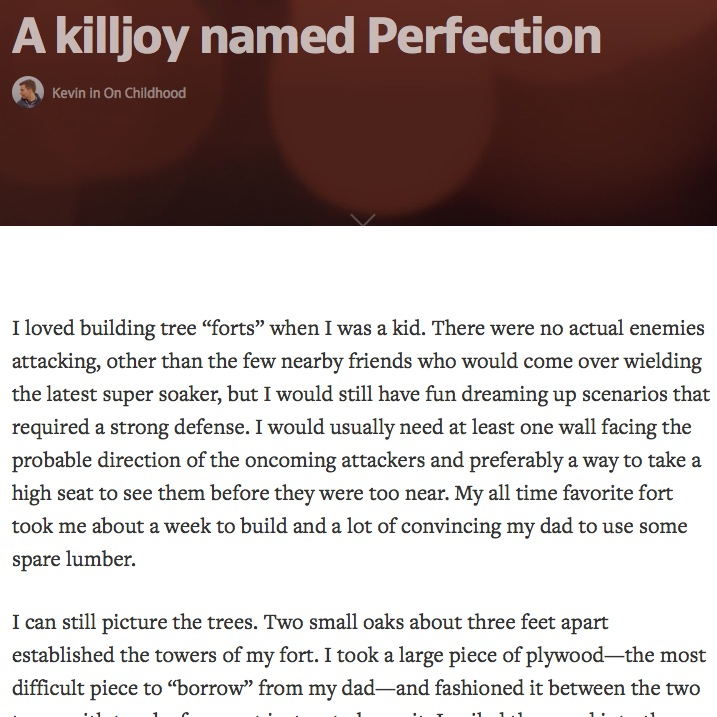

A killjoy named Perfection
Perma🔗 (via @paulmayne)

Great, simple advice:
How many times do I stop making something because I fear it will never be perfect? How easy is it to forget the joy of the process of making? For me, these two things happen far too frequently, but I want to reclaim some of the childlike innocence in just making something and showing it off, for no other reason than I’m proud of it.